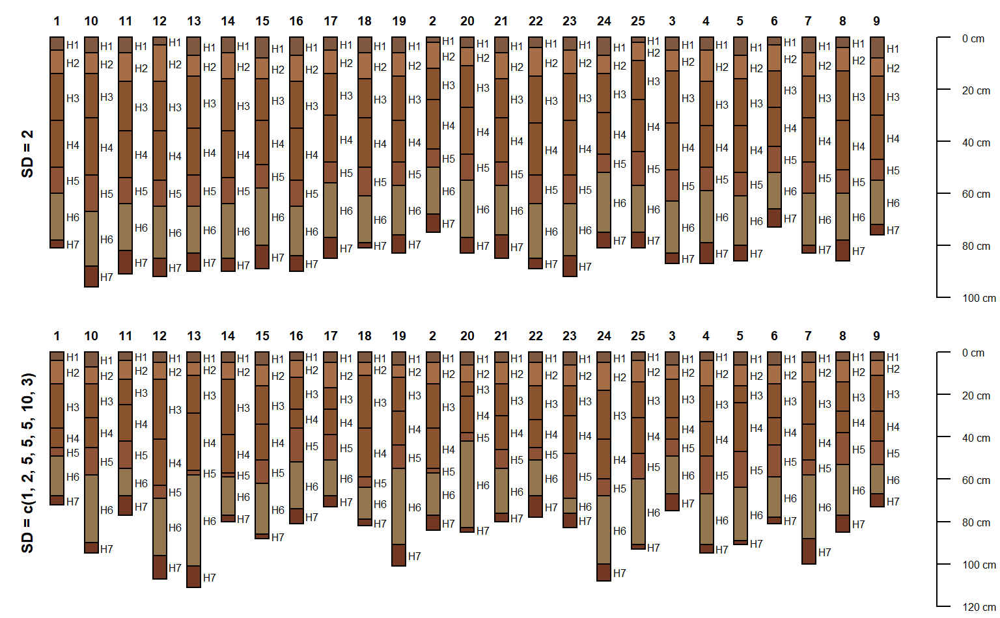
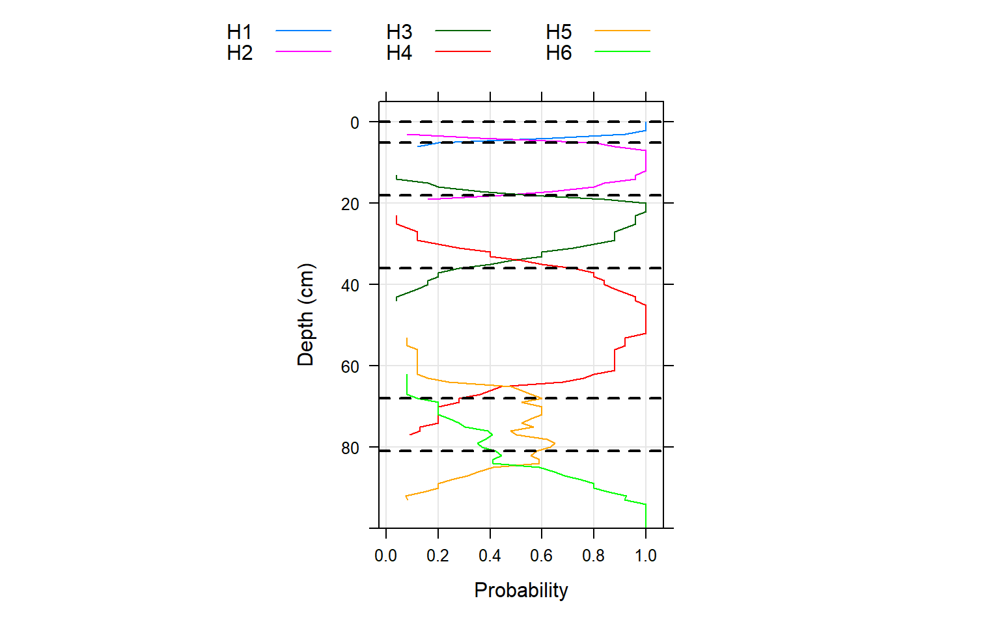

sim.RdSimulate a collection of soil profiles based on the horizonation of a single soil profile.
sim(x, n=1, iterations=25, hz.sd=2, min.thick=2)
| x | a SoilProfileCollection object containing a single profile from which to draw simulated data |
|---|---|
| n | the number of requested simulations |
| iterations | sampling iterations used to determine each horizon thickness |
| hz.sd | standard deviation used to simulate horizon thickness, can be a vector but must divide evenly into the number of horizons found in |
| min.thick | minumum horizon thickness allowed in simulation results |
A SoilProfileCollection object with n simulated profiles, each containing the same number of horizons and same data as x.
This function generates a collection of simulated soil profiles based on the horizon thickness data associated with a single "template" profile. Simulation is based on sampling from a family of gaussian distribution with means defined by the "template" profile and standard deviation defined by the user.
# load sample data and convert into SoilProfileCollection data(sp3) depths(sp3) <- id ~ top + bottom # select a profile to use as the basis for simulation s <- sp3[3, ] # reset horizon names s$name <- paste('H', seq_along(s$name), sep='') # simulate 25 new profiles, using 's' and function defaults sim.1 <- sim(s, n=25) # simulate 25 new profiles using 's' and variable SD for each horizon sim.2 <- sim(s, n=25, hz.sd=c(1, 2, 5, 5, 5, 10, 2)) # plot par(mfrow=c(2,1), mar=c(0, 0, 0, 0)) plot(sim.1)#>#>mtext('SD = c(1, 2, 5, 5, 5, 10, 2)', side=2, line=-1.5, font=2, cex=0.75)# aggregate horizonation of simulated data # note: set class_prob_mode=2 as profiles were not defined to a constant depth sim.2$name <- factor(sim.2$name) a <- slab(sim.2, ~ name, class_prob_mode=2) # convert to long format for plotting simplicity library(reshape) a.long <- melt(a, id.vars=c('top','bottom'), measure.vars=levels(sim.2$name)) # plot horizon probabilities derived from simulated data # dashed lines are the original horizon boundaries library(lattice) xyplot(top ~ value, groups=variable, data=a.long, subset=value > 0, ylim=c(100, -5), type=c('l','g'), asp=1.5, ylab='Depth (cm)', xlab='Probability', auto.key=list(columns=4, lines=TRUE, points=FALSE), panel=function(...) { panel.xyplot(...) panel.abline(h=s$top, lty=2, lwd=2) })